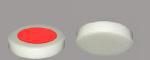

|
Quatre pièces Muettes, vierges sur leurs deux faces.
Les muettes peuvent se déplacer dans n'importe quelle direction,
mais ne peuvent pas capturer ou bloquer les pièces
adverses. Les muettes valent 1 point dans les échanges de prisonniers.
|

|

|
Deux Bleues, qui sont bleues sur leurs deux faces. Les
bleues se déplacent diagonalement, comme des fous aux échecs. Les
bleues valent 4 points dans les échanges de prisonniers.
|

|

|
Deux Rouges, qui sont rouges sur leurs deux faces.
Les rouges se déplacent orthogonalement, comme des Tours. Les
rouges valent 5 points.
|
|

|
Une Bleue Masquée qui est bleue sur une
face et vierge sur l'autre. Une bleue masquée se déplace
comme une bleue ou comme une muette, selon la face visible. Une bleue masquée
vaut 8 points.
|

|

|
Une Rouge Masquée qui est rouge sur une
face et vierge sur l'autre. Une rouge masquée se déplace
comme une rouge ou comme une muette, selon la face visible. Une rouge masquée
vaut 10 points.
|

|
|
Une Twist qui est orange sur une face et vierge
sur l'autre. Une twist se déplace comme un Cavalier, en L,
ou comme une muette selon la face visible. quand la face orange est
visible, la twist peut "déposer des pièces, en prendre,
en bloquer, tout au long de son déplacement en L. Une twist
vaut 15 points.
|

|

|
Un As, rouge sur une face etbleu sur l'autre.
L'as se déplace selon la couleur visible et vaut 21 points.
|

|